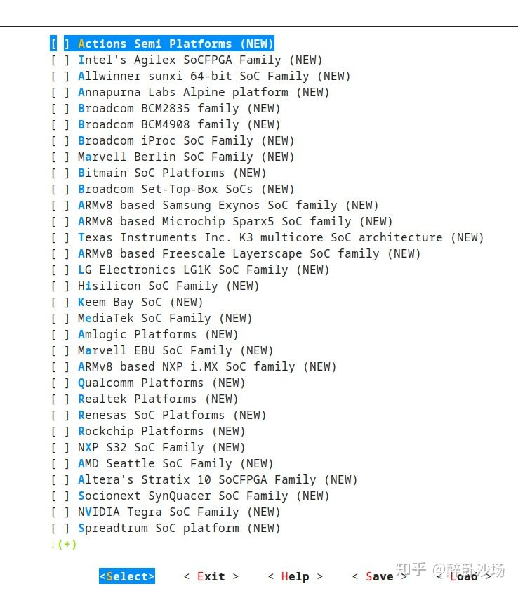

关于 CPU 体系架构和不同架构的区别产生了疑问。因此收集了一些本人感到有用的问答，摘录如下。
为什么Linux可以同时兼容x86和ARM，一个操作系统不是只能对应特定的硬件系统吗？
Answer 1
在你要讨论Linux内核能做什么的时候，你至少要搞清楚“运行时”和“编译时”两个不同概念。一个操作系统内核的代码可以支持很多体系结构和硬件，但是并不是说这些支持都能同时编译并使用。
在Linux内核中，和体系结构相关的代码在 arch/ 目录下：
1 | [xxxx@xxxx linux]$ ls arch/ |
基本上每一个目录代表一种体系结构，或者可以说代表它支持的一系列 CPU，比如 x86 目录就是你日常常用的Intel/amd CPU 使用的代码，mips 就是给 mips 的 cpu 用的，还有 powerpc, s390, sparc，arm, arm64 等等(我都附上了相关文档链接)，这些都是当前的 Linux 支持的体系结构。
但是这是静态的代码，不是运行时的。运行时你只能选针对一个体系结构编译、加载、运行，如果你想跑在另一个体系结构上，就要重新针对另一个体系结构重新编译内核。
所以编译内核之前最首要的就是决定你要针对哪个体系结构进行编译，默认会针对你当前所用的 CPU 所属体系结构进行编译，当然你还可以通过指定 ARCH 来进行编译交叉，比如要针对 arm64 进行编译配置，可以使用（当然如果是交叉编译的话你还需要交叉编译的工具链 CROSS_COMPILE）
1 | make ARCH=arm64 menuconfig |
需要针对powerpc体系结构进行编译的时候可以：
1 | make ARCH=powerpc menuconfig |
同时针对不同的体系结构你还可以进一步选择更具体的配置，比如：
比如：

这些都还只是编译前的配置，也就是选择要编译什么，配置之后则进行编译，编译成功后得到特定运行环境的内核（及其驱动），将内核（及其）驱动放在对应的硬件上加载运行即可。
所以返回来看你的问题：
为什么 linux 可以同时兼容 x86 和 arm？
因为 Linux 的代码中有针对不同 x86 和 arm 体系结构的 CPU 的代码，可以针对性的编译出运行在 x86 或 arm 上的内核（及其驱动）。
一个操作系统不是只能对应特定的硬件系统吗？
一个面向某一体系结构编译出来的内核，只能用于这一特定体系结构，同时所携带的驱动集合不同也将决定其所支持的外设的不同。
Answer 2
我以前跟你一样，觉得一个操作系统只能支持一种指令集。我觉得很大的原因是微软和 intel 的 wintel 联盟太强大了，基本上垄断了 PC,让很多人误以为一个操作系统只能支持一种指令集。
后来学了相关知识才理清它们之间的关系。
简单来说，操作系统是为了方便应用开发者开发，封装了硬件提供比较好用的接口（一般是 C 语言）给应用开发者。如果没有操作系统，应用开发者就需要直接面对硬件编程。举例来说，你的应用程序要进行读写磁盘操作，如果直接裸机开发，你不仅要熟悉你的业务知识，还要了解磁盘的基本原理（如何读写），要解决保存文件可能会引起冲突（不能覆盖已有的文件），还有解决写数据时系统奔溃只写了一半怎么办（异常处理）。。。
但是仔细一想，以上所说的磁盘操作对很多任务来说都是一致，只要读写磁盘都要进行这些操作，所以聪明的程序员就把一些基础的操作封装起来做成文件系统提供给应用程序员调用。同理其他硬件也是一样可以封装，针对不同类型的硬件封装抽象成不同的子系统，多个子系统就组成了内核，内核加上一些常用的软件就构成了操作系统。对于应用程序员来说读写文件只需要调用操作 read()、write()函数就可以了，而不需要管不同磁盘之间的微小差异，大大地简化了操作，解放了生产力！
我们知道了操作系统到底是怎么一回事，那么理解一个操作系统为什么能支持不同指令集了就比较容易了。指令集必须依托硬件，按照上述所说的思路，操作系统就可以把不同指令集的硬件抽象出来提供同一个接口给应用开发者使用，就达到兼容了！
那操作系统是如何抽象的呢？
简单来说，就是把不同架构的硬件可以共用部分抽象出来，不同的地方分别放到特定目录下。编译的时候只需要按照你要编译的平台编译需要的源码就好了！
Answer 3
操作系统内部一般可以分为两部分：
- 跟具体 CPU 硬件平台相关的部分
- 和 CPU 无关的部分
早期的 Linux，确实只支持 X86，后来开始不断支持新的平台，只需要添加跟 CPU 相关的那部分代码就可以了。在最新的 Linux 内核中，在 ARCH/ 目录下面，你会发现很多的文件夹
- X86
- ARM
- MIPS
- RISC-V
在一个文件夹，代表 Linux 内核支持的 CPU 平台。
内核在编译时，并不是将所有的内核源码都编译，而是根据你的配置 ARCH=arm，或 ARCH=mips，只会将 ARCH 目录下对应的平台编译进内核。
所以，现在已经很清楚了:
- 操作系统源码是支持不同的 CPU 的
- 但是要编译在某个平台上运行的镜像，要使用专门的编译器，编译具体的 ARCH 下面的代码，编译后生成的镜像就只能在对应的 CPU 平台上运行了。
单片机、CPU、指令集和操作系统的关系
首先讨论各种单片机与操作系统的关系
说到单片机，大家第一时间想到的应该是 51 单片机，对吧。不错，更高级一点的 AVR，把他称为单片机，我们也还觉得可以接受。那么再高级一点的 ARM7，8086，80386，Core i3，Athlon 等等我们更习惯称他们为 CPU，因为学习计算机原理的时候都是这么叫的，但按照单片机的定义，他们也是归属于单片机。这也不怪大家，中国的教育都是这样，只注重告诉你是什么，而不告诉你他们之间的联系。上述几种单片机或者芯片（如果你还是觉得把 core i3 叫做单片机你不习惯的话）在原理上都是一样，即都是有 运算器，控制器，寄存器构成的，不同之处在于它们的硬件电路实现不同，个数不同，功耗不同，计算能力不同，但都提供相同的基本功能。OK，终于让 cpu 找到了组织，那么就介绍为什么有的单片机要操作系统，有的在我们学习的过程中压根就跟操作系统不挨边。
51/AVR 单片机 在学习他们的时候，都是先介绍它们有哪些资源–有几个寄存器，有几个时钟等，然后就是怎么用汇编，用 C 或者是 C 与汇编混合编程。这里我们用的语言都是可以直接操作硬件资源的，因此我们可以自己决定什么时候使用哪个寄存器，什么时候将寄存器内容写到辅存储器中。
ARM 单片机 在学习它的时候，我们可以给他搭载操作系统，如 MicroC/OS，iOS X, Android 或者其他定制的Linux 操作系统，但有时我们也经常不让它搭载操作系统，而是直接像使用 51 单片机那样来操作它。
Core i3 / Athlon 单片机（或者 CPU，如果你还是不喜欢用单片机来形容这么牛逼的硬件） 你几乎没有听说过身边谁会在这种单片机上开发应用（如果有，一定要引荐我认识一下哦）。因为在这种单片机上开发的应用有一个很牛逼的名字–操作系统！ 由于这种单片机提供的资源太多，能干的活太多，我们需要有一个专门的程序来负责管理它，从而避免对相同的功能重复开发。这样我们就可以从对硬件编程中解放出来，更专注于应用层面的开发。从某种意义上来说，操作系统也就是一个应用程序而已，只不过他有点特别。
一般这种情况下，打个比方会比较好–单车和汽车。单车很简单，我们对它的构成及零部件也很熟悉，链条掉了，我们也完全能够应付。这就好比 51 单片机，资源不多，我们完全能够 hold 住。相较而言，汽车则复杂很多，有减速系统，刹车系统，电子系统，空调系统等等，但是我们并不需要清楚他们的硬件工作原理，我们之需要知道按那个开关，踩那个踏板就好了。这就好比单片机上的操作系统，它不需要我们清楚硬件的构造，想要实现功能，直接调用系统提供的 API 就可以了。 在我们双脚不停的蹬着踏板，自行车就前进这个动作中，我们是清楚的知道这其中各个部件的运行原理过程的；但如果你是踏着油门，汽车就跑起来，我觉得大部分人都不了解其中涉及到了哪些部件，以及各个部件的原理的。但这不妨碍我们使用，不是吗。
cpu与指令集的关系
CPU 依靠指令来计算和控制系统，每款 CPU 在设计时就规定了一些列与其硬件电路相配合的指令系统，或者说某款CPU 的硬件设计其实就是针对某个指令集的一种硬件实现。指令集也就是所谓的目标代码（或称为机器代码，是可以直接在 CPU 上运行的代码）可以看作是要求 CPU 对外提供的功能，某款 CPU 的设计肯定是朝着某个指令集来的。所以，不同的 CPU 架构，也表示这他的指令集要么较之前的指令集有所拓展或者就是实现了一种全新的指令集。指令集中的一条指令，就是让 CPU 完成一系列的动作，而该动作的完成则表明了某种运算的完成。一个功能可能需要一条或几条指令来实现。比如汇编的 MOV 或者 LD 语句就可能对应着几条 CPU 指令。
下面介绍几种常见的 CPU 架构与指令集的对应关系（所谓架构是指硬件电路的实现）：
intel X86 架构 CPU 可能实现了多个指令集 x86，x86-64，MMX，SSE，SSE2，SSE3，SSSE3，而这些指令集中的指令让 CPU 完成的动作都比较复杂，所以也称为 CISC
AMD amd6 4架构的 CPU 兼容了 x86 指令集还拓增了3D-Now!指令集，用于加强对 3D 显示的支持。
ARM ARMv1~ARMv7 架构的 CPU 实现了 Thumb 指令集和 ARM 指令集。这些指令集中的一条指令让 CPU 完成的动作都比较简单，所以也称为 RISC 指令集
指令集与操作系统的关系
这里要重新提及一下之前讲到的两个概念：指令集–就是机器代码；操作系统–就是应用程序
首先我们要知道计算机之父冯-诺伊曼说计算机只能运行在二进制上。所以不论是操作系统还是普通的应用程序最终都得转化到二进制代码才能够被 CPU 所处理。而用高级语言编写的普通应用程序都必须经过编译器编译后成为二进制代码（指令）才能运行。而不同的 CPU 所实现的指令集不同，所以不同的指令集对应的编译器也不尽相同，编译器不同，相同的高级语言程序经过编译后所得到的二进制代码也不同。 这就引出了 “移植” 和 “跨平台” 两个概念。OK，重新捋一下： CPU 架构-指令集-编译器-程序 环环相扣，紧密联系。所以你就会听到说Windows 操作系统只能够运行在 X86 架构的 CPU 上，不能运行在 Power 或 ARM 上，因为指令集不同，又所以就有了 “Wintel” 联盟。所以你也可以看到**有的编译器是有硬件厂家提供的，比如 Intel 就提供 C 和 C++ 的编译器，这样编译出来的程序就能更好的利用硬件的性能。**那为什么又会听到 linux 可以运行在不同架构的 CPU 上呢？那是因为 linux 是开源的，因此就可以将它移植到不同的 CPU 平台上，然后在用相应的编译器编译，就得到了可以在该 CPU 上运行的二进制代码了。而 Windows 是封闭的，得不到源代码，而 MS 自己又没有移植到别的 CPU 平台上的打算，所以当然就只能在 X86 上运行了。（BTW，X86 也是性能最好的 CPU 之一，而 Windows 对性能要求较高，所以 MS 当然也就不愿意移植了）
计算机最底层的编译器在哪？编译器需要知道CPU的架构吗？
Answer 1
编译器当然需要知道目标机器的 CPU 架构。事实上，有一种东西叫交叉编译，比如我可以在我的 x64 电脑上编译 arm64 的 android(AOSP)，也可以编译 mips 的 openwrt，重点是编译的时候精确指定需要的指令集，这样才能生成正确的目标二进制。例如有个工具叫做 crosstool-ng，可用于生成交叉编译工具链。ct-ng 实际上是对 gcc 工具链的包装，如果想要手动做这件事情，基本步骤是，下载 binutils 源码编译，下载 gcc 的各个依赖的源码以及 gcc 本体的源码，编译 gcc。在 configure binutils 的时候需要正确指定运行平台，在 configure gcc 的时候需要指定运行平台和目标平台，比如，我可以在我的 x64 电脑上生成一套 gcc 工具链，这套工具链可以运行在 armv7 的 cpu 中，用于生成 mips 的代码。
总而言之，**编译的目标指令集是可以定义的，在编译的时候目标平台指令集是确定的，只不过绝大多数情况下我们遇到的编译器都是运行于 x64 的编译器且生成 x64 的目标代码。**其实编译时还有个很重要的东西是目标平台的运行库，例如 windows 的系统提供的 c 运行环境和 linux 的就很不一样，编译器在编译的时候由于要帮你的程序链接到正确的库上，也是需要知道运行库的环境的，例如 printf 要调用哪里。再具体一点来说，编译器需要知道标准的头文件(如 stdio.h)的位置以及运行库(.so .lib .dylib)的位置和目标操作系统上的链接方式。
Answer 2
编译器运行在什么架构上是一回事；而用此编译器生成何种架构的代码是另外一回事情。
例如，可以用运行于 x86 架构上的编译器 arm-gcc 生成运行于 arm 架构上的代码；用运行于 x86 架构上的编译器 mips-gcc 生成运行于 mips 架构上的代码。就 gcc 而言，生成不同架构的代码有不同的编译器。
Answer 3
你把编译器泛化了。编译器最终只是你运行的一个程序，它被生成时就指定了只支持为某个架构的生成程序。因此，不同架构使用的编译器就不相同。比如：x86, x64, aarch64 架构的 GCC 就不一样。
为了提升效率，现在编译器都会分为前端和后端。前端会将 C/C++ 等源代码生成统一的中间代码，后端将相同的中间代码编译为不同目标架构下的汇编代码，交给这些架构下的汇编器进行汇编，生成机器码。这样，可以尽可能模块化，复用前端和后端。